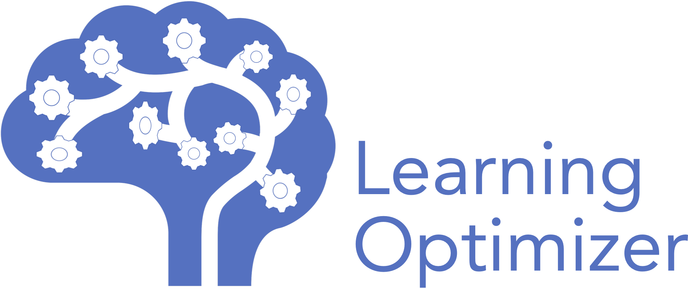

We are witnessing the rise of declarative big data systems. Examples include Hive, Spark, and Flink in the open source, and BigQuery, BigSQL, and SCOPE among proprietary systems. These systems take the declarative user queries as input and use a (typically cost based) query optimizer to pick the physical execution plans for that input. While query optimization has been a pain even in traditional databases, big data systems make the problem harder due to: (i) massive volumes of data which are very expensive to analyze and collect statistics on, (ii) presence of unstructured data that have schema imposed at runtime and hence cannot be analyzed a priori, and (iii) pervasive use of custom user code (e.g., UDFs) that embed arbitrary application logic resulting in arbitrary performance characteristics.
We are also witnessing the popularity of cloud infrastructures with managed data services, that put the onus of tuning the services on the cloud provider. Fortunately, the scale of these cloud services provide the unique opportunity of observing and analyzing massive query workloads that could be harnessed for continuously improving the performance of these services. The goal of this project is to leverage such cloud workloads for training machine learning models and providing feedback to the query optimizer for future optimizations.
Publications
-
Wangda Zhang, Matteo Interlandi, Paul Mineiro, Shi Qiao, Nasim Ghazanfari, Karlen Lie, Marc Friedman, Rafah Hosn, Hiren Patel, Alekh Jindal
Deploying a Steered Query Optimizer in Production at Microsoft (to appear)
SIGMOD 2022 (Industry), Philadelphia, USA.
-
Remmelt Ammerlaan, Gilbert Antonius, Marc Friedman, H M Sajjad Hossain, Alekh Jindal, Peter Orenberg, Hiren Patel, Shi Qiao, Vijay Ramani, Lucas Rosenblatt, Abhishek Roy, Irene Shaffer, Soundarajan Srinivasan, Markus Weimer
PerfGuard: Deploying ML-for-Systems without Performance Regressions, Almost!
VLDB 2022, Sydney, Australia.
-
Parimarjan Negi, Matteo Interlandi, Ryan Marcus, Mohammad Alizadeh, Tim Kraska, Marc Friedman, Alekh Jindal
Steering Query Optimizers: A Practical Take on Big Data Workloads
SIGMOD 2021 (Industry)
Industry Honorable Mention (SIGMOD Announcement)
-
Alekh Jindal, Shi Qiao, Rathijit Sen, Hiren Patel
Microlearner: A fine-grained Learning Optimizer for Big Data Workloads at Microsoft
ICDE 2021 (Industry)
-
Tarique Siddiqui, Alekh Jindal, Shi Qiao, Hiren Patel, Wangchao Le
Cost Models for Big Data Query Processing: Learning, Retrofitting, and Our Findings
SIGMOD 2020, Portland, USA.
-
H M Sajjad Hossain, Lucas Rosenblatt, Gilbert Antonius, Irene Shaffer, Remmelt Ammerlaan, Abhishek Roy, Markus Weimer, Hiren Patel, Marc Friedman, Shi Qiao, Peter Orenberg, Soundarajan Srinivasan, Vijay Ramani, Alekh Jindal
PerfGuard: Deploying ML-for-Systems without Performance Regressions
MLOps Systems 2020, Austin, USA.
-
Chenggang Wu, Alekh Jindal, Saeed Amizadeh, Hiren Patel, Wangchao Le, Shi Qiao, Sriram Rao
Towards a Learning Optimizer for Shared Clouds
VLDB 2019/PVLDB, Los Angeles, USA.
-
Alekh Jindal, Lalitha Viswanathan, Konstantinos Karanasos
Query and Resource Optimizations: A Case for Breaking the Wall in Big Data Systems
arXiv:1906.06590 [cs.DB], June 2019
-
Lalitha Viswanathan, Alekh Jindal, Konstantinos Karanasos
Query and Resource Optimization: Bridging the Gap
ICDE 2018, Paris, France (Short paper).
|